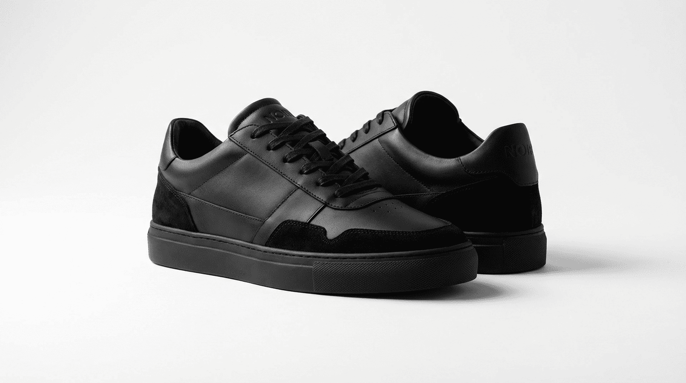

NOIRÉ
EDITORIAL
DROPS
PRODUCTS
PHILOSOPHY

FORMAL SHOES
SUMMER DROP
Precision expressed through restraint. Reduced lines. Controlled proportions.
MATERIAL — POLISHED LEATHER
CONSTRUCTION — MINIMAL STITCHING
COLOR — OBSIDIAN BLACK
ORIGIN — CONCEPT STUDY